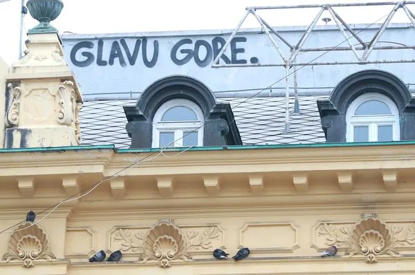

Glavu gore, nema predaje!
Malo o tome kako se naš speleološki odsjek snalazi u ovim vremenima. Da niste možda posumnjali? :)

Negdje na Facebooku jedan korisnik je objavio status; „Da se barem ova 2020-a može resetirat pa da krenemo ispočetka“. Vjerujemo da u ovom trenutku nema nikoga u Hrvatskoj tko se ne bi složio s njime.
Pandemija Covida 19 doslovce nas je društveno devastirala, natjerala nas da se prisilno izoliramo u strahu za sebe i svoje najbliže ali i sve druge, a sve to sa još uvijek neizvjesnim krajem – do kada će trajati, hoće li biti gore ili ćemo se uspjeti nekako izvući sa čim manje štete po živote ljudi i ne manje važno – hoće li biti štete po državu i privredu? Po onoj poznatoj uzrečici kako nevolja nikad ne dolazi sama, u Zagrebu nas je 22. ožujka u 06:24 još i sastavio potres od 5,5 po Richteru. Oko 7 sati zviznuo je i drugi, magnitude 5 po Richteru, a nedugo zatim i još jedan nešto slabiji. Ogromne štete nanesene su u centru Zagreba kao i u epicentru - Markuševcu. Sreća u nesreći je bila ta da je potres bio rano ujutro, u nedjelju. Da je bio radni dan, i mrvicu kasnije ... bolje i ne pretpostavljati. U danima iza ovoga nastavilo se podrhtavanje i igra sa živcima ljudi koji su ostali živjeti u oštećenim zgradama i kućama. Na društvenim mrežama iz očaja već su se počele postavljati fotografije o dočeku Godzille i vulkanu iznad Sljemena.
Nije se pojavila Godzilla (još), ali se zato Zagreb nekoliko dana iza toga podičio titulom grada sa najzagađenijim zrakom na svijetu. Naime da sve bude bolje, do nas su došle i čestice pijeska iz pustinje Karakum istočno od Kaspijskog jezera. Koncentracije tih čestica PM10 bile su u normama koje izazivaju ozbiljna oštećenja na plućima. A tih dana vjetra ili kiše niotkud.
Tako smo istrpjeli i to. Onaj težak psihološki dio svega ovoga tek iznosimo sa sobom sa još uvijek neizvjesnim posljedicama.
Ovo je bio tek uvod u priču. A priča je o tome kako se naš Speleološki odsjek PDS Velebit snalazi u ovim teškim vremenima. Nakon što smo zatvorili Radićevu 23 i odgodili sve sastanke, odgodili ovogodišnju 50. Zagrebačku speleološku školu, povukli smo se u svoje kuće i stanove, kako već nalažu preporuke Stožera CZ. Aktivnosti su se nastavile preko društvenih mreža. Ni pola sata nakon potresa, putem mobitela i Whatsapp grupe aktivirani smo u sustavu specijalističkih postrojbi CZ. Svi smo se stavili na raspolaganje iako su neki od nas uistinu gadno prošli u potresu, da ne spominjemo tu još i izolacije zbog koronavirusa i td... Srećom nije bilo potrebe za izvlačenjem iz ruševina, ali zbog ogromne štete koje su napravili dimnjaci na krovovima – lomeći se i propadajući kroz krovove i na ulicu, zgrade stare po stotinu godina uistinu su loše prošle, kao i zbog preopterećenosti vatrogasaca u Zagrebu u saniranju istih, volonteri CZ- speleolozi, alpinisti preuzeli su na sebe poslove saniranja šteta, skidanja dimnjaka, crijepova... Unatoč Koroni, unatoč opasnostima i rizicima. I još uvijek rade. Solidarnost se ovih dana pokazuje u svojoj najljepšoj strani. Naravno, ima kukolja u žitu, a taj se odnosi na one građane koji su u stanju dignuti živce i najmirnijima; poput dedice od 80-ak godina koji se popeo na krov zgrade i skida crijep, da bi na pasja kola izvrijeđao vatrogasce koji su ga upozorili da se vrati jer nije osiguran i nije njegov posao, ili likova koji se bune što ne mogu proći ispod krana koji skida dimnjak i što moraju sada obilaziti 50-ak metara drugom ulicom... Ali tako je kako je, neke ljude niti jedna nevolja neće promijeniti, već će izvući i najgore iz njih. Dane izolacije sada već i ne brojimo, ali to nas nije priječilo da na svom Facebook portalu naš odsjek bude aktivniji nego prije. Pozivamo ljude na odgovornost, a da bi im olakšali ova teška vremena, širimo pozitivu, objavljujemo stare i skoro zaboravljene priče, speleolozi iz Karlovca organizirali su besplatna online predavanja (speleologija, planinarstvo, izleti...) za sve zainteresirane. Izbjegavamo lošu vibru uvijek i svagdje. Objavljujemo neke stare filmiće, neke nikad pogledane kadrove („Iza kamere“), fotografije... A u srijedu, 1. travnja 2020. unatoč šaljivom značenju tog datuma organizirali smo i prvi virtualni sastanak odsjeka. I to je sada ušlo u povijest. Da nam fali sastanaka i druženja vidilo se po broju uključenih. Smijeha nije nedostajalo, pa čak i pive kao na „pravim“ sastancima. Nakon što je završena točka pod „Razno“, druženje se nastavilo još par sati iza toga. Tema nije nedostajalo, i očito – svima nam je falilo i svima nam je to trebalo. Nastavljamo iduću srijedu. U međuvremenu, naša ekipa i dalje volonterski pomaže i čisti po krovovima. Planiramo 50. školu za najesen. Planiramo odlazak na Sjeverni Velebit. Planiramo odlaske u jame i špilje. Planiramo preseljenje u nove prostorije iako Radićeva 23 nije jako nastradala u potresu. Planiramo. Nadamo se. Očekujemo. Nije normalna situacija, ali se trudimo ostati normalni. I hoćemo. Iz ovoga ćemo samo izaći jači. I zato, glavu gore! Špilje i planine su tu i dalje, čekaju nas. Opet ćemo mirisati borove, planinsko cvijeće, travu... i onu neopisivu i najslađu rapsodiju mirisa koju osjećaš jedino kada nakon nekoliko dana u jami izlaziš na svjetlo sunca. Pa sve da dođe i Godzila. Fotografije: razni autori; Facebook, internet
[gallery ids="3313,3314,3315,3316,3317,3318,3319,3320,3311,3310,3306,3307,3304" type="rectangular"]